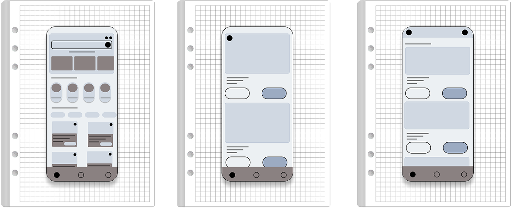
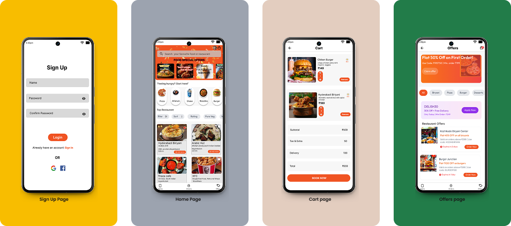
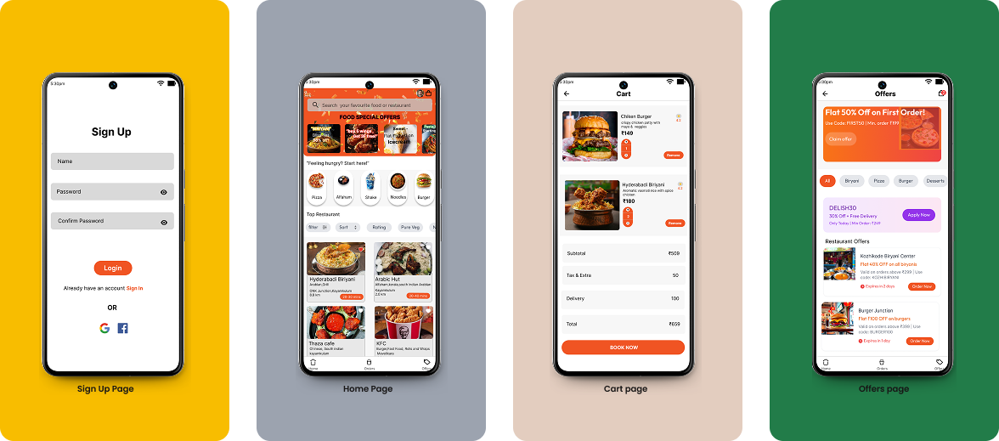

Problem and Solution
The Problem
- Users can't quickly find how to cancel an order, especially in the first few minutes after placing it.
- Support UI is cluttered with unclear button labels, mixed message threads, and no proper prioritization of help topics.
- Coupon codes are hard to read due to small font sizes and heavy text with confusing T&Cs, leading users to skip them altogether.
“I often feel stuck when trying to fix something or cancel my order - the buttons just aren't where I expect them to be.”
– User feedback from survey & app reviews
The Solution
- Added a visible cancel button on the order screen for easy access after placing an order.
- Redesigned support UI with clear buttons and organized help topics for quicker resolution.
- Improved coupon layout with larger fonts and simplified text for better readability.
“Improved the visual layout of item cards and order summary with clear images and details. Redesigned the checkout flow to be faster and more intuitive.”
- User feedback collected through informal testing
“Improved the visual layout of item cards and order summary with clear images and details. Redesigned the checkout flow to be faster and more intuitive.”
- User feedback collected through informal testing
Design Process
Research & Discovery
To begin the redesign, I conducted a user-centered analysis to identify pain points in the existing Swiggy app. My goal was to understand real frustrations, navigation issues, and visual gaps through informal testing, surveys, and UI audit.
Peer Review
Shared my design concepts with 6 friends who regularly use food delivery apps. They provided insights on button placement, clarity, and overall ease of use.
User Surveys
Collected responses from 30+ users through a short feedback form to understand their issues with ordering, payment, and applying offers in the current app.
UI/UX Audit
Independently analyzed the current Swiggy interface to identify inconsistencies in button visibility, visual hierarchy, and navigation flow.
Key Research Findings
- Users often miss important actions like "Cancel Order" due to hidden buttons.
- Many found the support section confusing and difficult to navigate.
- Users tend to skip coupons if they appear cluttered or hard to read.
- A cleaner, more intuitive layout was preferred by all reviewers.
Ideation & Wireframing
Wireframe exploration showcasing screen structure before applying visual design.
UI Design & Prototyping
I developed a comprehensive design system and created high-fidelity mockups for all key screens.
The design focused on beautiful food presentation, intuitive navigation, and a streamlined checkout process.Design System

Components Library
 
Design Evaluation
The designs underwent rigorous usability testing with 12 participants from the target demographic.
Based on feedback, several iterations were made to improve the user experience.Key Iterations
Based on user review feedback, i made the following improvements :
- Improved visibility of the Cancel Order button during order confirmation.
- Redesigned the support section layout to make buttons and messages easier to read and tap.
- Enhanced coupon readability with larger font, simplified and better spacing.
- Added clearer visuals and spacing in the cart and checkout flow for a smoother experience.
Final Design
Key Features
Design Principles
Intuitive Navigation
Tab-based layout with key actions (Home, Offers, Orders) accessible in one or two taps. Simplified userflow from browsing to checkout.
Visual Hierarchy
Each screen uses typohraphy, spacing, and color to guide user attention to what matters most like food categories, deals, or CTA buttons.
Visual-First Experience
Focused on clean UI with large, appealing food images and simplified layouts. Items are easy to browse and feel delightful to interact with.
Consistency
Used a consistent design system across all pages - uniform button styles, spacing, and icon usage to build trust and visual balance.
Improved Action Visibility
Essential actions like "Cancel Order" were made easily accessible by placing them in expected, visible locations - helping users act without hesitation.
Visual Feedback
All user actions like adding to cart, placing an order, or cancelling - show instant visual feedback.
Outcomes
Lessons Learned
User Feedback Drives Clarity
Even informal feedback from friends and users help uncover real usability issues. Simple peer reviews led to meaningful design improvements
Clear Actions Build Trust
Making buttons like "Cancel Order" or "Get Help" easy to find gave users more confidence and control while using the app.
Readable Design Increases Engagement
Improving text size, spacing, and coupon layout made the app feel cleaner and easier to use leading to better interaction with offers.
Design is an Ongoing Process
Iterating on design based on real feedback made a big difference. Each small change brought the experience closer to what users actually wanted.
Scope
Current Status
The redesigned Swiggy app screens were created as part of a personal practice project. I shared the design with peers and received encouraging feedback on clarity, layout, and usability. The project is now part of my portfolio to demonstrate my UI thinking and visual improvement skills.
Future Roadmap
Based on informal feedback and design exploration, plan to enhance the design with:
- Dark Mode Support for better accessibility and night-time use.
- More personalized offers based on user ordering behavior.
- Multi-language options to support a wider user base.
Personal Reflections
This project helped me grow both creatively and practically. Key lessons I learnt include:
- User feedback is powerful, even when collected informally.
- Iterating with purpose leads to a better, more user-centered outcome.
- Redesigning projects is a great way to sharpen real-world design thinking.
“I often feel stuck when trying to fix something or cancel my order - the buttons just aren't where I expect them to be.”
– User feedback from survey & app reviews